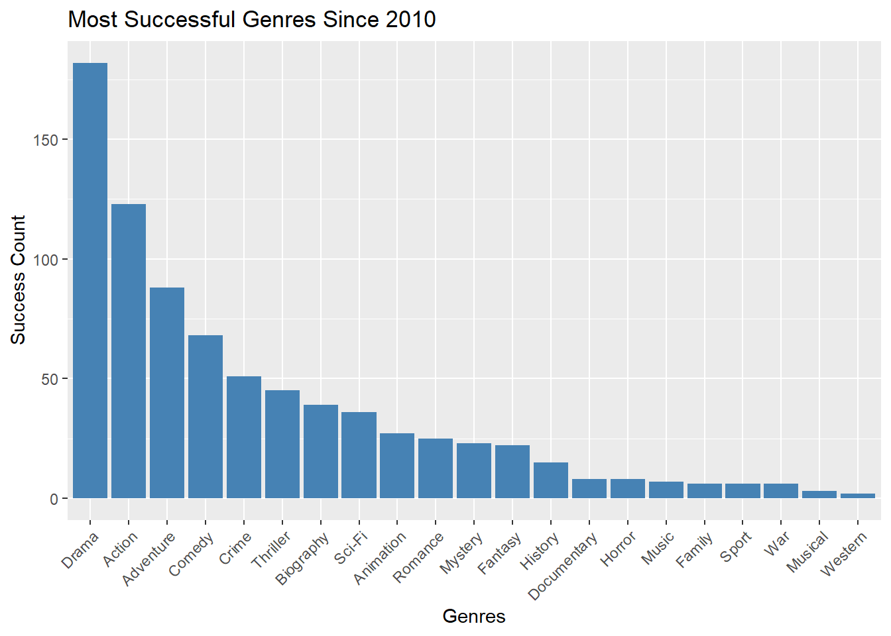

##Load any necessary function packageslibrary(ggplot2)library (tidyverse)library(stringr)library(dplyr)library(DT)library(knitr)##loading the data filesget_imdb_file <-function(fname) { BASE_URL <-"https://github.com/michaelweylandt/STA9750/raw/main/miniprojects/mini02_preprocessed/" fname_ext <-paste0(fname, ".csv.zip")if (!file.exists(fname_ext)) { FILE_URL <-paste0(BASE_URL, fname_ext)download.file(FILE_URL, destfile = fname_ext) }# Unzip the file and read the CSV temp_file <-unzip(fname_ext, list =TRUE)$Name[1] # Get the name of the first file inside the ZIPunzip(fname_ext) # Unzip the fileas.data.frame(readr::read_csv(temp_file)) }NAME_BASICS <-get_imdb_file("name_basics_small")TITLE_BASICS <-get_imdb_file("title_basics_small")TITLE_EPISODES <-get_imdb_file("title_episodes_small")TITLE_RATINGS <-get_imdb_file("title_ratings_small")TITLE_CREW <-get_imdb_file("title_crew_small")TITLE_PRINCIPALS <-get_imdb_file("title_principals_small")
For our NAME_BASICS table, we’ll restrict our attention to people with at least two “known for” credits.
TITLE_RATINGS |>ggplot(aes(x=numVotes)) +geom_histogram(bins=30) +xlab("Number of IMDB Ratings") +ylab("Number of Titles") +ggtitle("Majority of IMDB Titles Have Less than 100 Ratings") +theme_bw() +scale_x_log10(label=scales::comma) +scale_y_continuous(label=scales::comma)
For better understanding, let’s use the separate_longer_delim function to break these into multiple rows.
# Separate the 'knownForTitles' and 'primaryProfession' columns into multiple rowsNAME_BASICS <- NAME_BASICS |>separate_longer_delim(primaryProfession, ",") |>separate_longer_delim(knownForTitles, ",")
Task 2
1. How many movies are in our data set? How many TV series? How many TV episodes?
# Count of each typemovie_count <- TITLE_BASICS |>filter(titleType =="movie") |>nrow()tv_series_count <- TITLE_BASICS |>filter(titleType =="tvSeries") |>nrow()tv_episode_count <- TITLE_BASICS |>filter(titleType =="tvEpisode") |>nrow()library(gt)tibble(Title_Type =c("Movies", "TV Series", "TV Episodes"),Count =c(movie_count, tv_series_count, tv_episode_count)) |>gt() |>tab_header(title ="Counts of Titles in IMDb") |>cols_label(Title_Type ="Title Type",Count ="Number of Titles")
Counts of Titles in IMDb
Title Type
Number of Titles
Movies
131662
TV Series
29789
TV Episodes
155722
2. Who is the oldest living person in our data set?
The oldest person in out data set is Angel Acciaresi.
# Find the oldest living person (the oldest living age is 116)current_year =2024oldest_living <- NAME_BASICS |>filter(is.na(deathYear)) |>filter(birthYear >= (current_year -116)) |>#make sure age is less than or equal to 116arrange(birthYear) |>select(- nconst, - knownForTitles) |>slice(1)# Display the oldest living personoldest_living |>gt() |>tab_header(title ="Oldest Living Person")
Oldest Living Person
primaryName
birthYear
deathYear
primaryProfession
Angel Acciaresi
1908
NA
assistant_director
3. There is one TV Episode in this data set with a perfect 10/10 rating and 200,000 IMDb ratings. What is it? What series does it belong to? need to work on expanding columns
# Join with TITLE_RATINGS to find the perfect episodesperfect_tv_episode <- TITLE_RATINGS |>filter(averageRating ==10, numVotes >=200000) |>left_join(TITLE_BASICS, by ="tconst") perfect_tv_episode |>gt() |>tab_header(title ="TV Episode with Perfect Rating")
TV Episode with Perfect Rating
tconst
averageRating
numVotes
titleType
primaryTitle
originalTitle
isAdult
startYear
endYear
runtimeMinutes
genres
tt2301451
10
227589
tvEpisode
Ozymandias
Ozymandias
FALSE
2013
NA
47
Crime,Drama,Thriller
4. What four projects is the actor Mark Hammill most known for?
# Get projects for Mark Hamillmark_hamill_projects <- NAME_BASICS |>filter(primaryName =="Mark Hamill") |>select(nconst) |>left_join(TITLE_PRINCIPALS, by ="nconst") |>left_join(TITLE_BASICS, by ="tconst") |>select (characters, titleType, primaryTitle, startYear, endYear, genres) |>slice_head(n =4)
Warning in left_join(select(filter(NAME_BASICS, primaryName == "Mark Hamill"), : Detected an unexpected many-to-many relationship between `x` and `y`.
ℹ Row 1 of `x` matches multiple rows in `y`.
ℹ Row 406999 of `y` matches multiple rows in `x`.
ℹ If a many-to-many relationship is expected, set `relationship =
"many-to-many"` to silence this warning.
mark_hamill_projects |>gt() |>tab_header(title ="Projects Mark Hammill is Most Known For")
Projects Mark Hammill is Most Known For
characters
titleType
primaryTitle
startYear
endYear
genres
["Corey Anders"]
tvSeries
Jeannie
1973
1975
Animation,Comedy,Family
["Paul Swensen"]
tvMovie
Eric
1975
NA
Drama
["Ken Newkirk"]
tvMovie
Sarah T. - Portrait of a Teenage Alcoholic
1975
NA
Drama
["Eugene Banks"]
tvMovie
The City
1977
NA
Crime,Drama
5. What TV series, with more than 12 episodes, has the highest average rating?
top_tv_series <- TITLE_EPISODES |>left_join(TITLE_RATINGS, by ="tconst") |>group_by(parentTconst) |>summarize(avg_rating =mean(averageRating, na.rm =TRUE), episode_count =n() ) |>filter(episode_count >12) |>arrange(desc(avg_rating)) |>left_join(TITLE_BASICS, by =c("parentTconst"="tconst")) |>select(avg_rating, episode_count, titleType, primaryTitle, startYear, endYear, genres) |>slice(1)top_tv_series |>gt() |>tab_header(title ="Highest Rating for TV series over 12 Episodes")
Highest Rating for TV series over 12 Episodes
avg_rating
episode_count
titleType
primaryTitle
startYear
endYear
genres
10
328
tvSeries
Made
2003
NA
Reality-TV
**6. The TV series Happy Days (1974-1984) gives us the common idiom “jump the shark”. The phrase comes from a controversial fifth season episode (aired in 1977) in which a lead character literally jumped over a shark on water skis. Idiomatically, it is used to refer to the moment when a once-great show becomes ridiculous and rapidly looses quality.
Is it true that episodes from later seasons of Happy Days have lower average ratings than the early seasons?**
Yes, later seasons of Happy Days have an average rating of 6.87 while earlier seasons of Happy Days have an average rating of 7.47.
#Step 1: find the tconst for Happy Dayshappy_days_tconst <- TITLE_BASICS |>filter(primaryTitle =="Happy Days") |>select(tconst)#Step 2: Find the episode & rating for Happy days using tconsthappy_days_episode <- TITLE_EPISODES |>filter(parentTconst%in% happy_days_tconst$tconst) |>inner_join(TITLE_RATINGS, by ="tconst") |>mutate(seasonNumber =as.integer(seasonNumber))#Step 3: Assume treshold season 1-5 are early season and 6-11 are later seasonhappy_days_episode <- happy_days_episode |>mutate(season_group =ifelse(seasonNumber <=5, "Early", "Later"))#Step 4: Calculate average rating for early and later seasonaverage_ratings <- happy_days_episode |>group_by(season_group) |>summarise(average_ratings =mean(averageRating, na.rm =TRUE), .groups ='drop')print(average_ratings)
# A tibble: 2 × 2
season_group average_ratings
<chr> <dbl>
1 Early 7.47
2 Later 6.87
Task 3: Custom Success Metric
I want to define a success metric that balances the quality of the film production and popularity awareness. In our data set, some films have high ratings but low popularity awareness whil other films have low ratings but wide popularity awareness. Hence, i want to create a success metric that can balance average rating and number of votes. First, look below for the distribution of average rating and number of votes.
1. Choose the top 5-10 movies on your metric and confirm that they were indeed box office successes.
movies_ratings_success <-full_join(TITLE_RATINGS, TITLE_BASICS, by ='tconst') |>filter(titleType =="movie") #CHANGE THIS NAME
# Step 1: Join TITLE_RATINGS with TITLE_BASICS to filter moviestop_success_movies <- TITLE_RATINGS |>inner_join(TITLE_BASICS, by ="tconst") |>filter(titleType =="movie") |>arrange(desc(success)) |>slice_head(n =10) # View the updated table with success metrictop_success_movies |>gt() |>tab_header(title ="Top 10 Successful Movies")
Top 10 Successful Movies
tconst
averageRating
numVotes
success
titleType
primaryTitle
originalTitle
isAdult
startYear
endYear
runtimeMinutes
genres
tt0111161
9.3
2942823
11.53795
movie
The Shawshank Redemption
The Shawshank Redemption
FALSE
1994
NA
142
Drama
tt0468569
9.0
2922922
11.35524
movie
The Dark Knight
The Dark Knight
FALSE
2008
NA
152
Action,Crime,Drama
tt0068646
9.2
2051186
11.33357
movie
The Godfather
The Godfather
FALSE
1972
NA
175
Crime,Drama
tt0167260
9.0
2013824
11.20622
movie
The Lord of the Rings: The Return of the King
The Lord of the Rings: The Return of the King
FALSE
2003
NA
201
Action,Adventure,Drama
tt0110912
8.9
2260017
11.19235
movie
Pulp Fiction
Pulp Fiction
FALSE
1994
NA
154
Crime,Drama
tt1375666
8.8
2595555
11.18772
movie
Inception
Inception
FALSE
2010
NA
148
Action,Adventure,Sci-Fi
tt0137523
8.8
2374722
11.15216
movie
Fight Club
Fight Club
FALSE
1999
NA
139
Drama
tt0120737
8.9
2043202
11.15201
movie
The Lord of the Rings: The Fellowship of the Ring
The Lord of the Rings: The Fellowship of the Ring
FALSE
2001
NA
178
Action,Adventure,Drama
tt0109830
8.8
2301630
11.13965
movie
Forrest Gump
Forrest Gump
FALSE
1994
NA
142
Drama,Romance
tt0108052
9.0
1475891
11.08191
movie
Schindler's List
Schindler's List
FALSE
1993
NA
195
Biography,Drama,History
2. Choose 3-5 movies with large numbers of IMDb votes that score poorly on your success metric and confirm that they are indeed of low quality. ratings are not low
# Movies with large number of votes but low success metric# Question 2: Choose 3-5 movies with large numbers of votes but low success scorepoorly_rated_movies <- TITLE_RATINGS %>%filter(success <8, numVotes >100000) %>%# Threshold for low successinner_join(TITLE_BASICS, by ="tconst") %>%filter(titleType =="movie") %>%select(primaryTitle, averageRating, numVotes, success, startYear) %>%arrange(success) %>%head(5)poorly_rated_movies %>%gt() %>%tab_header(title ="Movies with Large IMDb Votes but Low Ratings" )
Movies with Large IMDb Votes but Low Ratings
primaryTitle
averageRating
numVotes
success
startYear
Radhe
1.9
180205
5.980740
2021
Epic Movie
2.4
110222
6.084101
2007
Meet the Spartans
2.8
112199
6.331212
2008
Adipurush
2.7
133981
6.342181
2023
365 Days
3.3
100579
6.587480
2020
3. Choose a prestige actor or director and confirm that they have many projects with high scores on your success metric.
# Select a prestige actor: Leonardo DiCaprioprestige_actor <- NAME_BASICS |>filter(primaryName =="Leonardo DiCaprio") |>select(nconst)# Get projects for Leonardo DiCapriodiCaprio_projects <- TITLE_PRINCIPALS |>filter(nconst %in% prestige_actor$nconst) |>left_join(TITLE_BASICS, by ="tconst") |>left_join(TITLE_RATINGS, by ="tconst") |>select(primaryTitle, averageRating, success) |>arrange(desc(success)) |>slice_head(n=5)# Display projects with high scores on success metricdiCaprio_projects |>filter(success >quantile(TITLE_RATINGS$success, 0.75)) |>gt() |>tab_header(title ="Leonardo DiCaprio's High Success Projects")
Leonardo DiCaprio's High Success Projects
primaryTitle
averageRating
success
Inception
8.8
11.18772
Django Unchained
8.5
10.84523
The Departed
8.5
10.77334
The Wolf of Wall Street
8.2
10.63925
The Wolf of Wall Street
8.2
10.63925
4. Perform at least one other form of ‘spot check’ validation.
5. Come up with a numerical threshold for a project to be a ‘success’; that is, determine a value such that movies above are all “solid” or better.
#Define a success thresholdsuccess_threshold =9
##Task 4: Using questions like the following, identify a good “genre” for your next film. You do not need to answer these questions precisely, but these are may help guide your thinking.
To make the visuals easier to interpret, let’s split the ‘genres’ column in TITLE_BASICS
What was the genre with the most “successes” in each decade?
library(dplyr)library(tidyr)TITLE_BASICS <- TITLE_BASICS %>%mutate(decade =floor(startYear /10) *10)# Filter for movies above success threshold (>7.30)successful_movies <- TITLE_RATINGS %>%filter(success > success_threshold) %>%inner_join(TITLE_BASICS, by ="tconst") %>%filter(titleType =="movie")# Groupsuccess_by_genre_decade <- successful_movies %>%separate_rows(genres, sep =",") %>%# Split multiple genresgroup_by(decade, genres) %>%summarize(success_count =n(), .groups ='drop') %>%arrange(desc(success_count))library(ggplot2)ggplot(success_by_genre_decade, aes(x = decade, y = success_count, fill = genres)) +geom_bar(stat ="identity", position ="dodge") +labs(title ="Top Genres with Most Successes Per Decade", x ="Decade", y ="Success Count") +theme_minimal()

What genre consistently has the most “successes”? What genre used to reliably produced “successes” and has fallen out of favor?
library(dplyr)library(ggplot2)# Step 1: Filter successful movies based on success metric thresholdsuccessful_movies <- TITLE_BASICS |>left_join(TITLE_RATINGS, by ="tconst") |>filter(success > success_threshold) |>filter(titleType =="movie") # Ensure we're only considering movies# Step 2: Group successful movies by genre and count the number of successesgenre_success_count <- successful_movies |>separate_rows(genres, sep =",") |>group_by(genres) |>summarise(success_count =n(), .groups ='drop') |>arrange(desc(success_count))# Step 3: Plot the genre success countsggplot(genre_success_count, aes(x =reorder(genres, success_count), y = success_count, fill = genres)) +geom_bar(stat ="identity") +labs(title ="Total Successful Films by Genre", x ="Genre", y ="Number of Successful Films") +theme_minimal() +coord_flip() +scale_y_continuous(limits =c(0, max(genre_success_count$success_count) +10)) # Padding the y-axis for better visibility
library(dplyr)library(ggplot2)library(tidyr)# Step 1: Filter successful movies based on success metricsuccessful_movies <- TITLE_BASICS |>left_join(TITLE_RATINGS, by ="tconst") |>filter(success > success_threshold) |>filter(titleType =="movie") # Only consider movies# Step 2: Create a 'decade' column to group movies by decade of releasesuccessful_movies <- successful_movies |>mutate(decade =floor(startYear /10) *10)# Step 3: Separate genres (multiple genres may exist for each movie)success_by_genre_decade <- successful_movies |>separate_rows(genres, sep =",") |>group_by(decade, genres) |>summarise(success_count =n(), .groups ='drop') |>arrange(decade, genres)# Step 4: Find genres with a clear decline in success over time# Calculate a ratio of success in the most recent decade compared to earlier decadesgenre_trends <- success_by_genre_decade |>group_by(genres) |>summarise(first_decade_success = success_count[which.min(decade)], # Success in the first decadelast_decade_success = success_count[which.max(decade)], # Success in the last decadetotal_success =sum(success_count), # Total success over all decades.groups ='drop' ) |>filter(last_decade_success < first_decade_success) # Genres that have declined# Step 5: View and plot the genres that have fallen out of favorgenre_trends |>ggplot(aes(x =reorder(genres, -total_success), y = total_success, fill = genres)) +geom_bar(stat ="identity") +labs(title ="Genres That Have Fallen Out of Favor Over Time", x ="Genre", y ="Total Successful Films") +theme_minimal() +coord_flip()
What genre has produced the most “successes” since 2010? Does it have the highest success rate or does it only have a large number of successes because there are many productions in that genre?
successful_movies_after_2010 <- TITLE_BASICS |>filter(startYear >=2010) |>left_join(TITLE_RATINGS, by ="tconst") |>separate_rows(genres, sep =",") %>%group_by(genres) %>%summarize(success_count =n(), .groups ='drop') %>%arrange(desc(success_count))ggplot(successful_movies_after_2010, aes(x =reorder(genres, -success_count), y = success_count)) +geom_bar(stat ="identity", fill ="steelblue") +labs(title ="Most Successful Genres Since 2010", x ="Genres", y ="Success Count") +theme(axis.text.x =element_text(angle =45, hjust =1))
What genre has become more popular in recent years?
##Task 5: Identify (at least) two actors and one director who you will target as the key talent for your movie. Write a short “pitch” as to why they are likely to be successful. You should support your pitch with at least one graphic and one table.